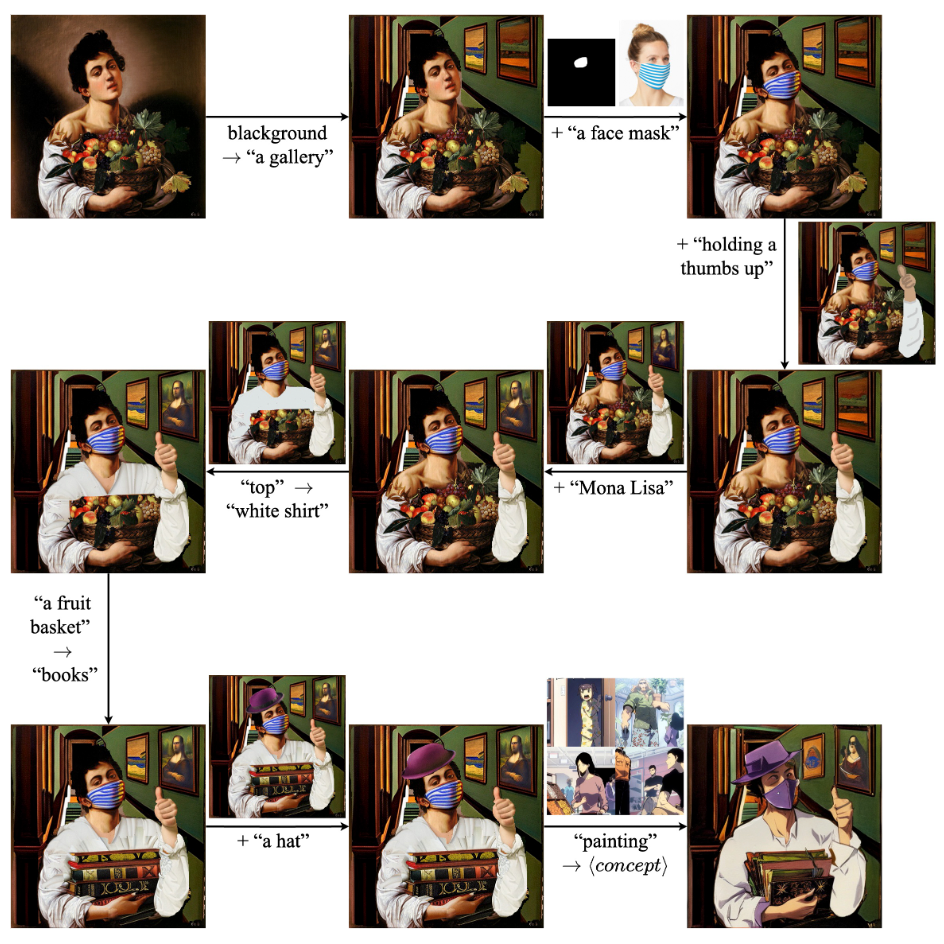
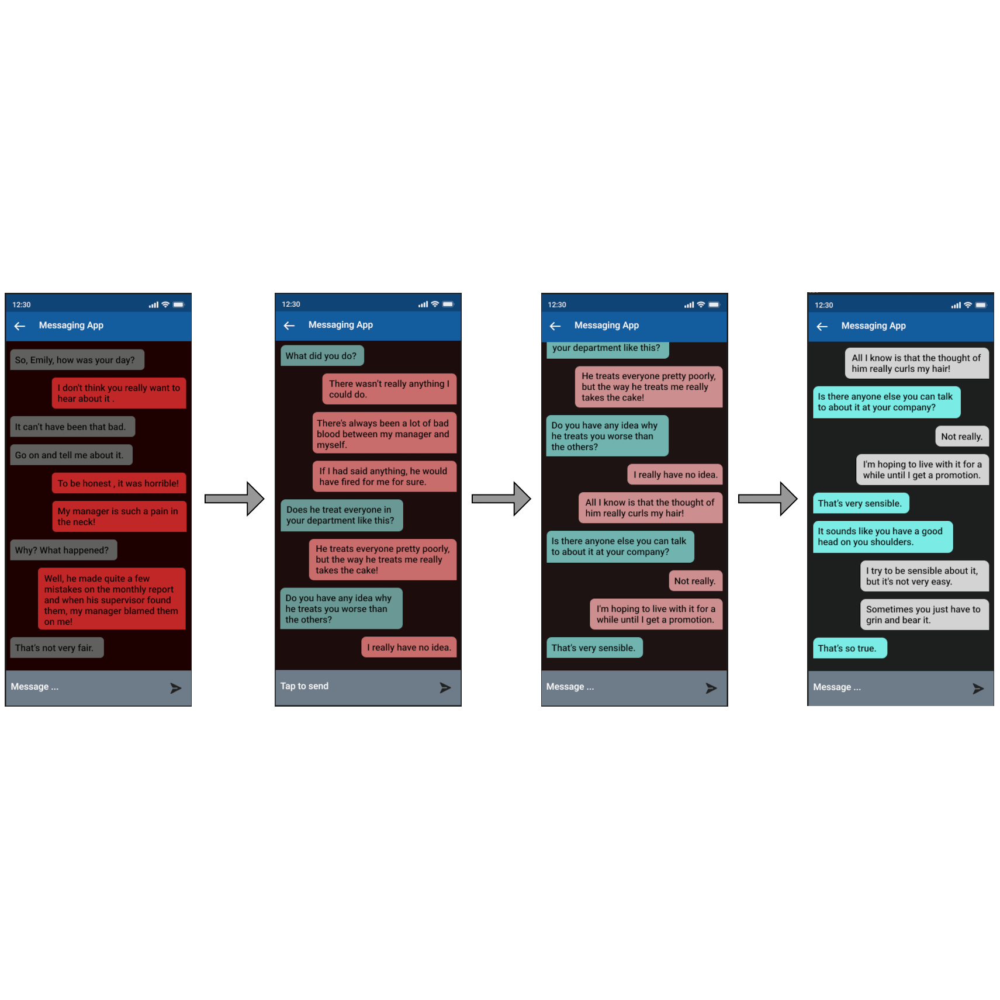
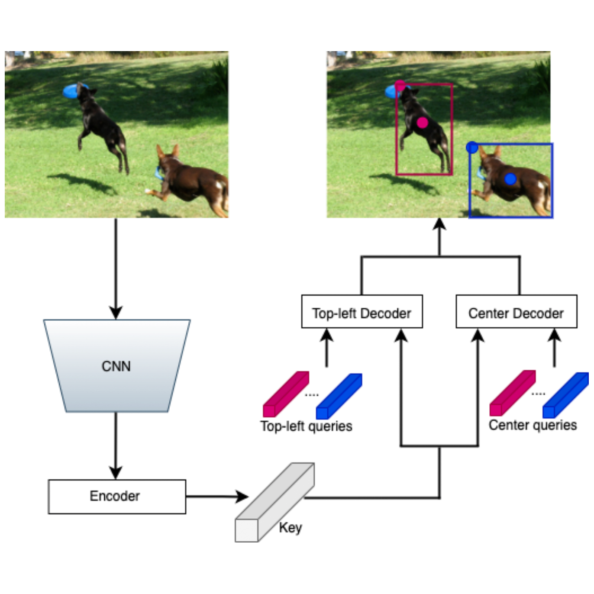
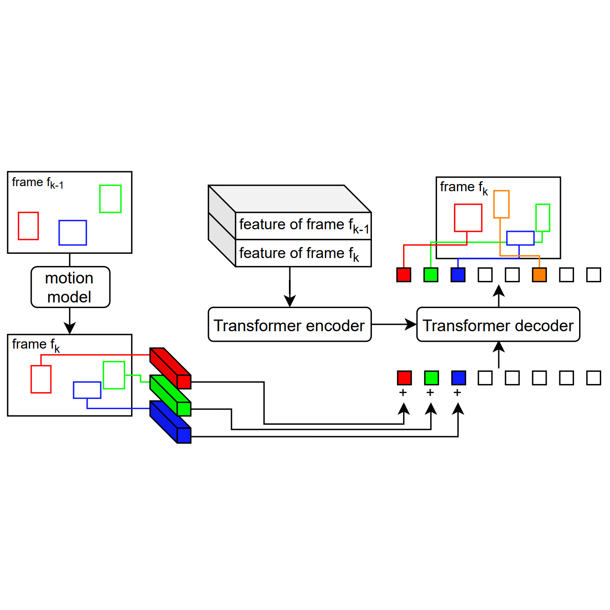
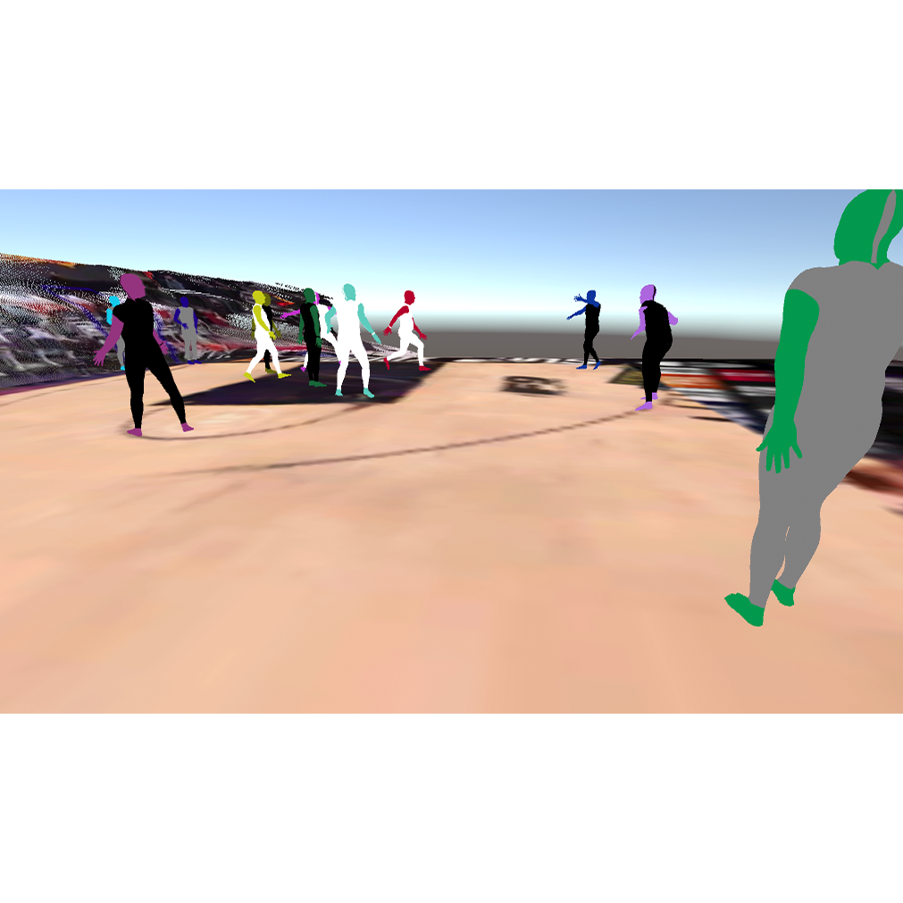

Hi! I'm a PhD student in the CS Department at UC Santa Barbara, co-advised by
Prof. Pradeep Sen and
Prof. Misha Sra. I earned a double B.S.'s
in CS as well as Applied and Computational Mathematical Sciences (ACMS) from the
University of Washington.
I am broadly interested in Machine Learning, Computer Vision, and Human-Computer Interaction, with a primary focus on image generation and its applications.
I am broadly interested in Machine Learning, Computer Vision, and Human-Computer Interaction, with a primary focus on image generation and its applications.

Research


EChat: An Emotion-Aware Adaptive UI for a Messaging App
Radha Kumaran, Viral Niraj Doshi, Sherry X Chen, Avinash Aji Nargund, Tobias Höllerer, Misha Sra
UIST, 2023

Pair DETR: Toward Faster Convergent DETR
Seyed Mehdi Iranmanesh, Sherry X Chen, Kuo-Chin Lien
ICASSP, 2023

PatchTrack: Multiple Object Tracking Using Frame Patches
Xiaotong Chen, Seyed Mehdi Iranmanesh, Kuo-Chin Lien
arXiv, 2022

IntoTheVideos: Exploration of Dynamic 3D Space Reconstruction From Single Sports Videos
Xiaotong Chen, Misha Sra
UIST, 2021